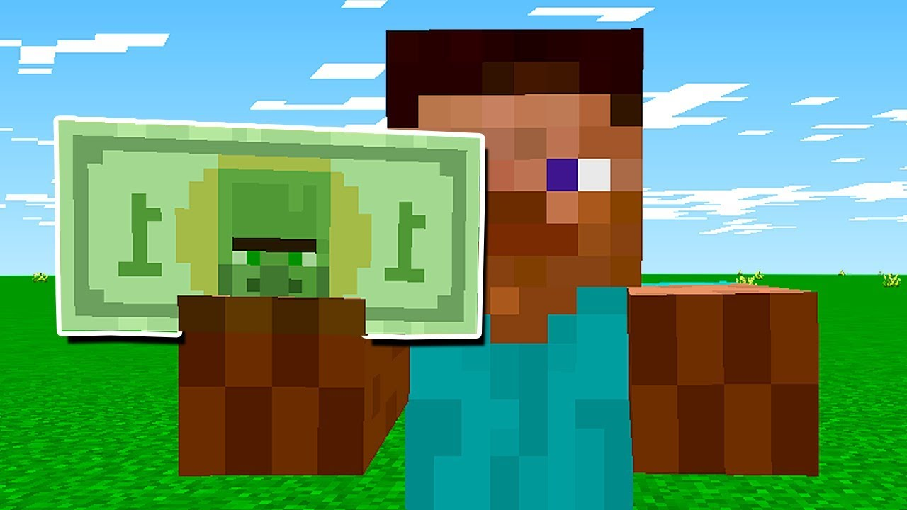

Recentemente ouvi rumores sobre um castelo mágico que fica nas profundezas de uma floresta mística, então hoje eu decidi ir procura-lá, por onde devo começar?
Na ida para o Aether você acaba encontrando um portal e diante dele sente muito medo. O que ira fazer..
Na sua ida a Twilight você encontra uma igreja antiga, também há um litoral próximo. Oque ira fazer...
Ao se aproximar do portal você é puxado e levado para uma floresta mágica, em frente há uma trilha..
Você decide que a aventura é grande demais e volta para casa, mas sempre se pergunta o que teria encontrado ou o que teria descoberto.
Nas igrejas antigas você descobre um tipo de mapa que informa uma trilha para seguir
Explorando as praias, você encontra uma caverna escondida, mas ela leva a um beco sem saída.
Conforme você segue a trilha você encontra uma bifurcação
De volta às igrejas, você finalmente encontra uma informação sobre o castelo antigo. Agora, para a investigação!
O caminho à esquerda leva você a uma cachoeira escondida com inscrições antigas que revelam a entrada do castelo perdido.
O caminho à direita leva você a um lugar sombrio, ao ouvir sons de possiveis animais você deduz que ali não há pistas do castelo perdida
ao encontrar o castelo perdido você recebe uma surpresa, um mordomo que te aguardava e ansiosamente te mostrou das riquezas que havia naquele castelo, mas quando você revelou sua intenção de roubar ele se mostrou desapontado e logo sumiu no ar.
Retornando e escolhendo o rio à esquerda, você finalmente encontra a cachoeira escondida e as inscrições que levam ao castelo perdida.
Você demonstra humildade e recebe o real tesouro que lá havia.
